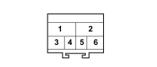

D020C DASHBOARD/REAR COUPLING (DASHBOARD)
- Path
- Electrical equipment > 3 CONNECTORS > D INTERMEDIATE COUPLINGS > D020 DASHBOARD/REAR COUPLING > D020C DASHBOARD/REAR COUPLING (DASHBOARD)
- Kind
- connector pinout (pin -> wire colour -> other end)
- Applies to
- all engines; all production periods
- Interactive page
- https://sloeber94.github.io/elrnDB-fPnd/en/#/169003075
Applies to: all engines; all production periods

Wiring | Colour |
|---|---|
- |
Pin | Cable | Destination | |||
|---|---|---|---|---|---|
Sec.. | Colour | Node | Connect. | Pin | |
1 | 0,5 | AV (light blue with green stripe) | X | 2 | |
3 | |||||
2 | 0,5 | BR (white with red stripe) | 28 | ||
3 | 0,5 | VN (green with black stripe) | 1 | ||
4 | 0,5 | S (pink) | 4 | ||
5 | 0,5 | Z (violet) | 2 | ||
6 | 0,5 | ZB (violet with white stripe) | 3 | ||
Topics linked from this page (4)
- 20 FACIA
- B002 JUNCTION UNIT UNDER DASHBOARD
- D030B DRIVER'S FRONT DOOR COUPLING (DASHBOARD)
- D031B PASSENGER FRONT DOOR COUPLING (DASHBOARD)